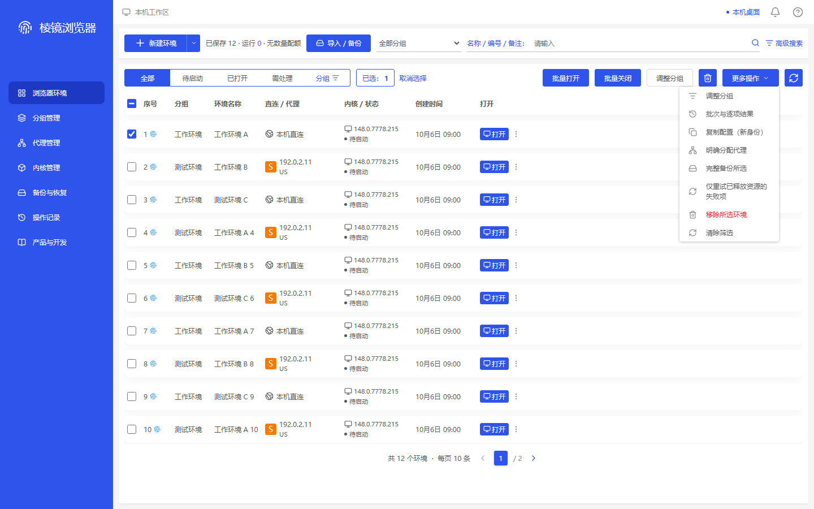

gap-shell-native-more-selected · 1440×900
MAPPED — 新图实际tbody.scrollTop=0，表体y202.859375/h582，首行y212.859375/h48/relativeTop10且完整可见，分页y794.859375/h30。准确选中1项、菜单无切边、无业务提交；原单行菜单与当前工具条低频菜单内容不同，仍只作容器映射。旧同视口8px滚动、仅2px首行间距的FAIL保留；本次只是新的稳定读取和明确顶部捕获，不是App修复或严格1:1。
同类参考容器：environment-row-menu；不是同名原商业执行。


48c0c06194a4ebf356f1535b0e13228b33713ef3f68677c84b57f0ae92a937aa